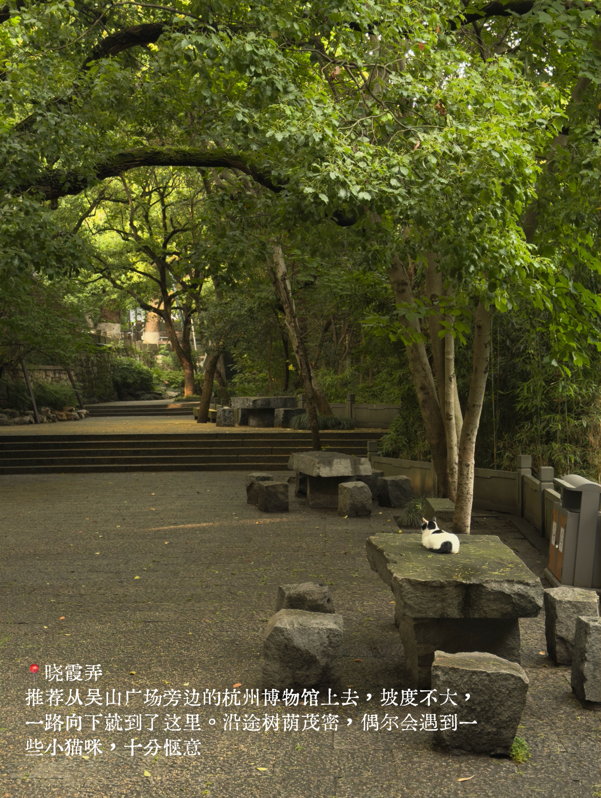
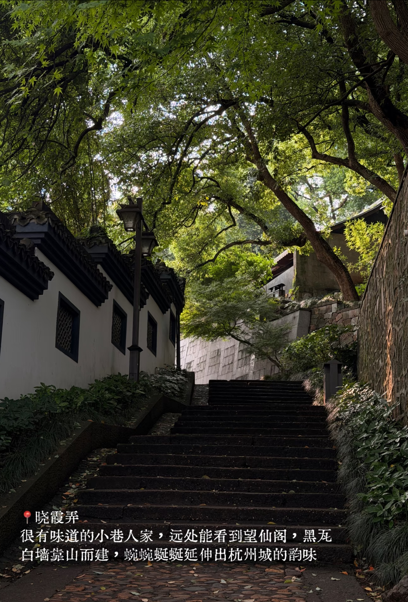
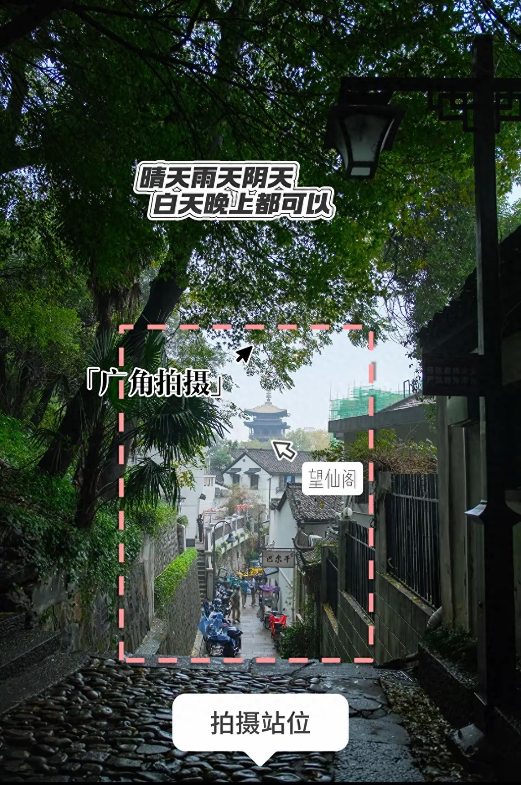
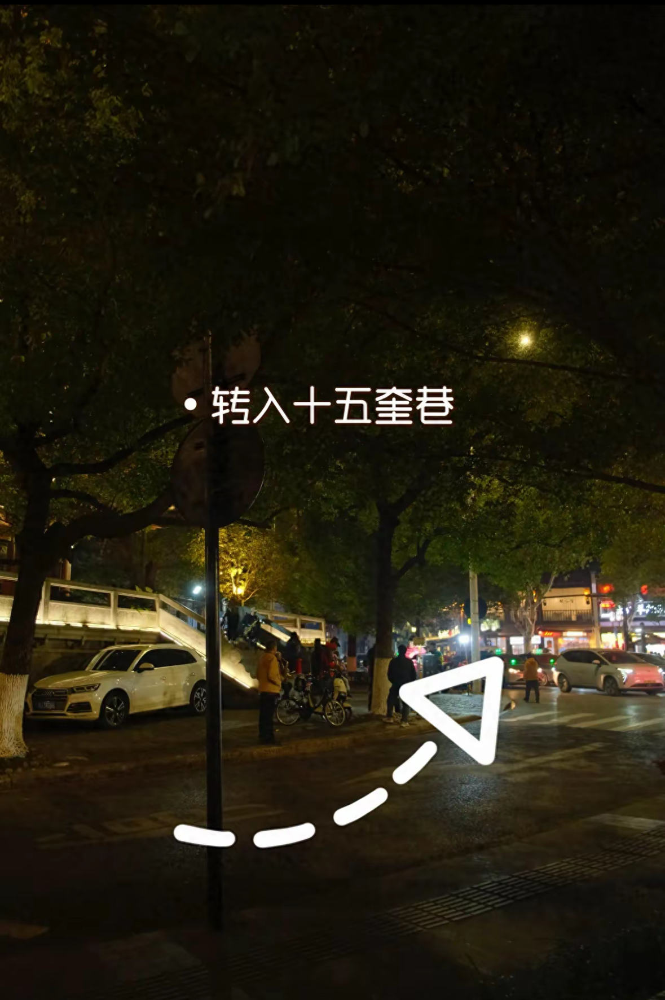
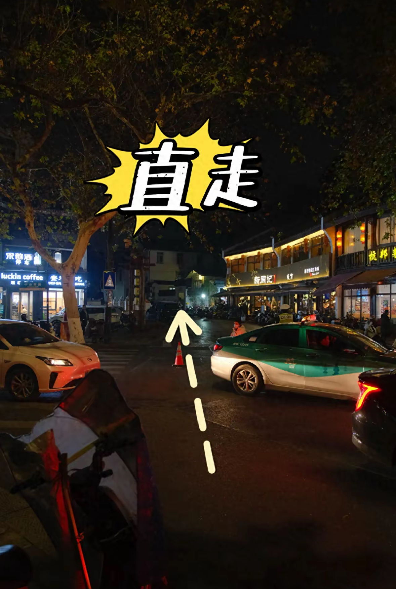
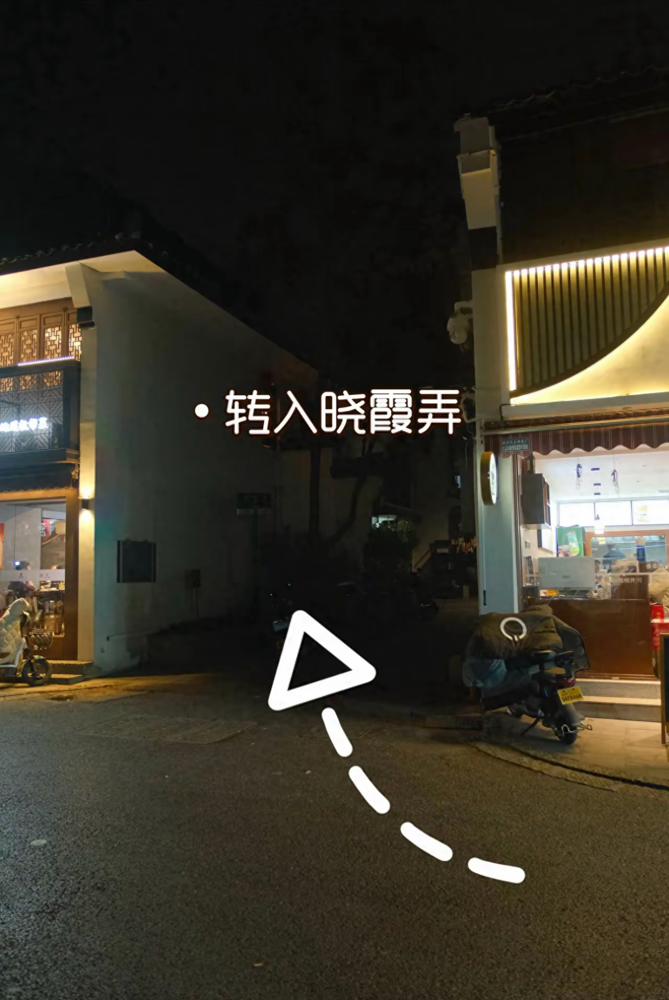

· 最佳游览时间:晚上逛河坊街、南宋御街更有氛围。



相册 1/3
晓霞弄-小巷文字墙及望仙阁
城市漫游者
创建 >
拍摄技巧
机位:站小巷入口低处，平拍角度。构
图:石板路+两侧建筑做引导线，引视线到望仙阁塔顶，利用光影对比增强纵深感。
图:石板路+两侧建筑做引导线，引视线到望仙阁塔顶，利用光影对比增强纵深感。
图文步导
精准抵达机位
13.4km 距机位驾车约18分钟
上城区十五奎巷与中山南路交叉口
全部讨论
偷一颗甜橙
♡ 4
晓霞弄这条小巷一定要下午四点左右来！侧逆光打在巷子里，望仙阁做背景拍背影巨出片。
逆光手记
♡ 4
提醒大家，站巷子低处往高处仰拍，石板路的引导线直接把视线带到望仙阁，这个构图亲测好用！
床边摄影师
♡ 4
适合慢悠悠散步的小巷，不用赶行程，随手一拍都很有江南老街的感觉。
拍摄技巧
补充
 拍摄技巧
拍摄技巧
机位:站小巷入口低处，平拍角度。
构图:石板路+两侧建筑做引导线，引视线到望仙阁。
前景与焦点:前景左棕榈叶右绿植，取小巷全貌+白墙黑瓦+望仙阁，标准焦段/手机2x。

出行攻略
经验建议
· 拍摄时间:建议晚上六点后，夏天蓝调亮灯氛围好，白天也可以。
· 拍摄对象:空景可随时拍，男女生都好拍。
· 拍摄点及周边:拍摄点在望仙阁附近晓霞弄，巴尔干客栈、吴山景区、十五奎巷可逛拍。
穿搭建议
· 学生风:推荐学生风妆造，整体更显元气活力，是拍摄加分项。
图文步导
补充
1
从鼓楼公车站下车后，往回走。

2
步行100米后，左转进入十五奎巷。

3
一直直行。

4
随后150米，进入晓霞弄，进入弄堂100米到巴尔干客栈，上台阶就可以看到望仙阁。

恭喜你成功找到机位！